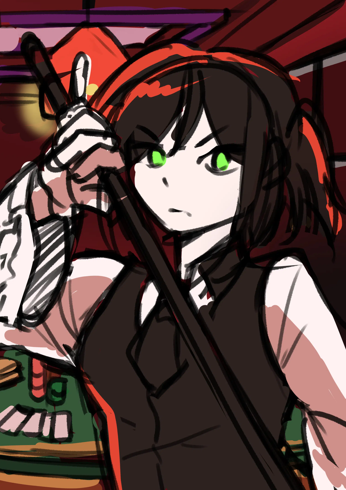
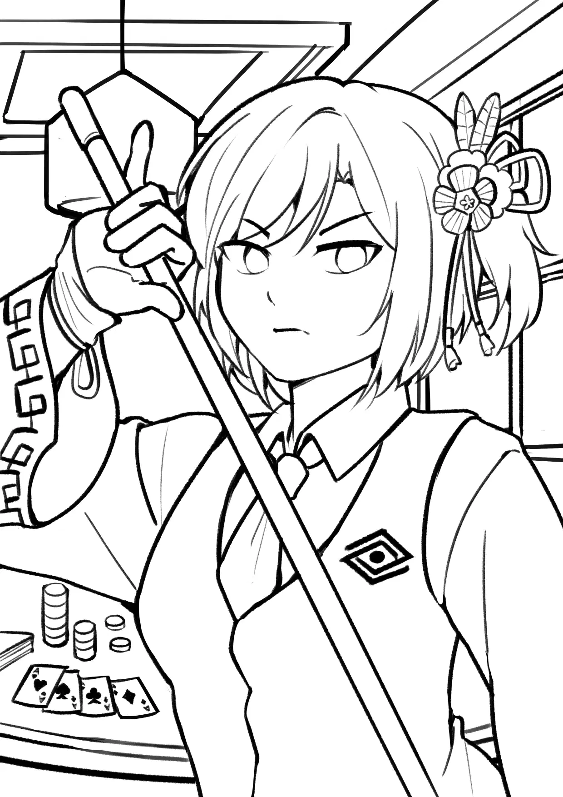
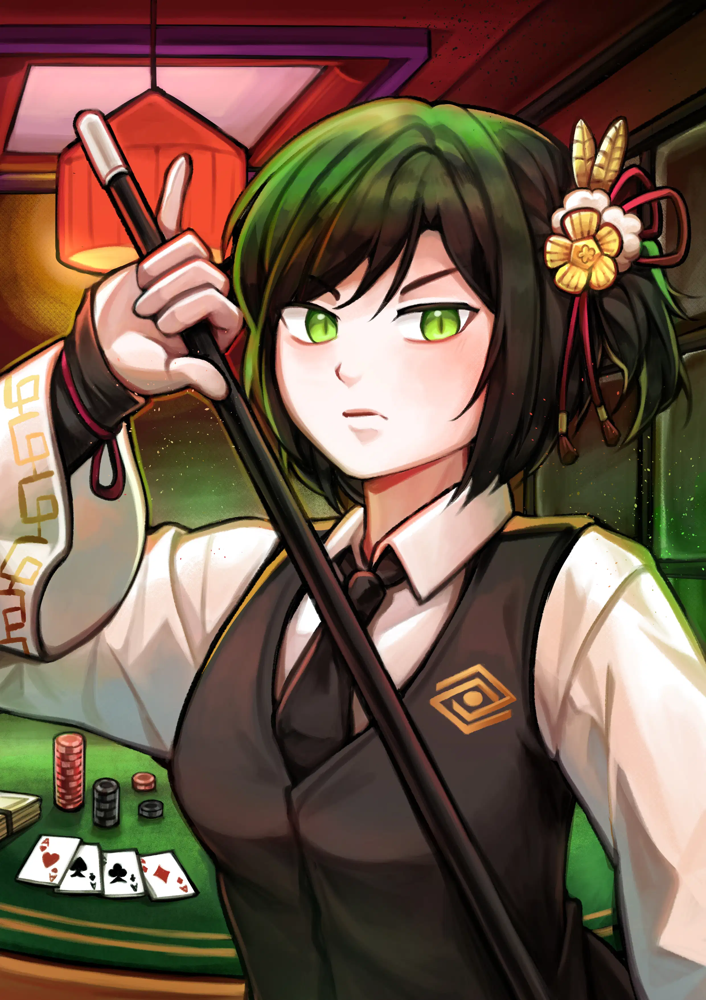

Featuring their character Wan Wen, who works in Chinese site of Providence Company (RP). The site entrance is linked to casino, hence the background. RoN associates Wen with green color, so despite the lighting being mainly red, they requested the ambience changed to green. RoN specifically mentioned the girl's fierce expression in initial brief.